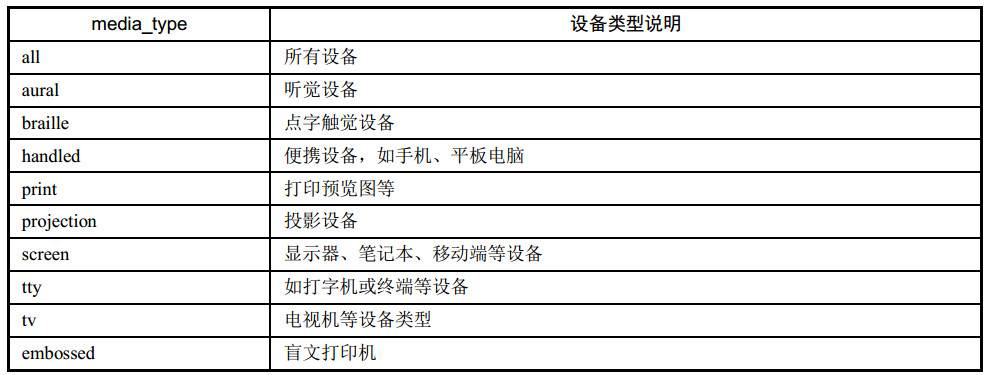
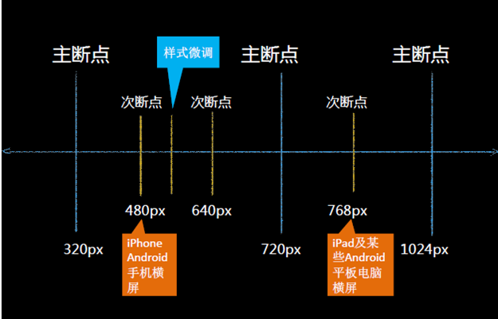
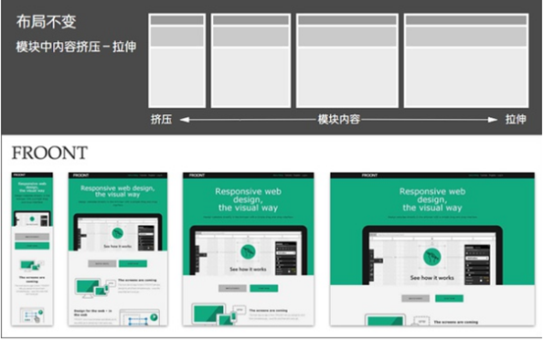
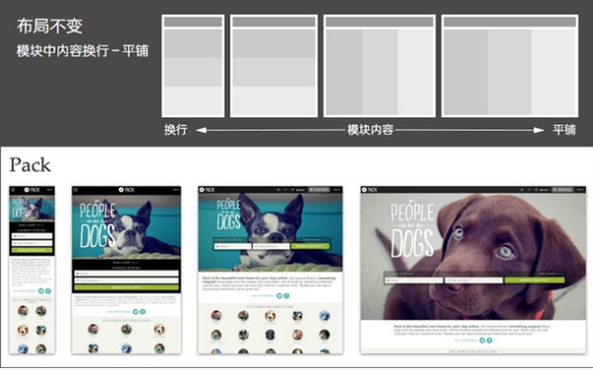
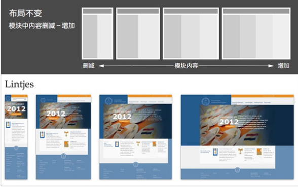
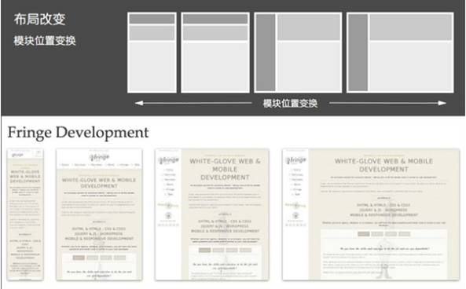
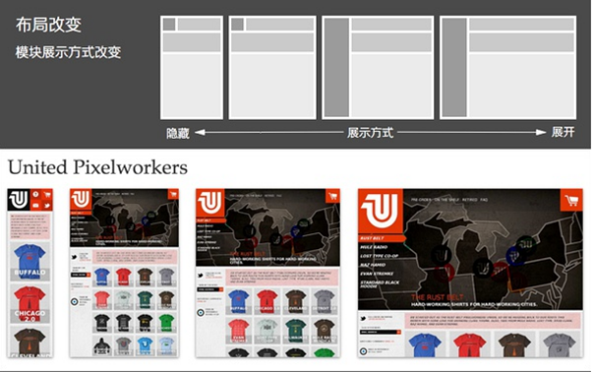
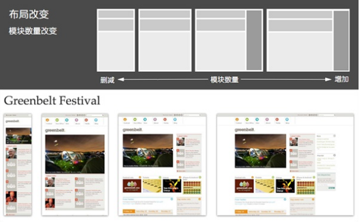

<!DOCTYPE html>
<html lang="en">
<head>
	<meta charset="UTF-8">
	<title>Document</title>
	<style>
		*{margin:0;padding:0;}
		body{background:#ccc;}
		h2{font-size:50px;width:80%;margin:50px auto;}
		h3{width:80%;height:50px;background:#199475;font-size:30px;line-height:50px;margin:20px auto;color:#fff;}
		span{font-size:20px;font-weight:900;display: block;margin:10px 0;color:#d00}
		p{width:80%;margin:20px auto;line-height:24px;}
		.redc{color:#d00;}
		h4{width:60%;height:30px;background:#FF9;font-size:24px;line-height:30px;margin:20px auto;color:#396;}
	</style>
</head>
<body>
	<h2>媒体查询</h2>
	<h3>什么是媒体查询
</h3>
	<p>	媒体查询可以让我们根据设备显示器的特性（如视口宽度、屏幕比例、设备方向：横向或纵向）为其设定CSS样式，媒体查询由媒体类型和一个或多个检测媒体特性的条件表达式组成。媒体查询中可用于检测的媒体特性有 width 、 height 和 color （等）。使用媒体查询，可以在不改变页面内容的情况下，为特定的一些输出设备定制显示效果。
</p>
	<h3>1、媒体查询操作方式
</h3>
	<p>实际操作为：对设备提出询问（称作表达式）开始，如果表达式结果为真，媒体查询中的CSS被应用，如果表达式结果为假，媒体查询内的CSS将被忽略。
</p>
	<h3>2、媒体查询结构
</h3>
	<p>@media all and (min-width:320px) { <br>
	body { background-color:blue;}<br>
 }
</p>
	<h4>设备类型（默认为all）
</h4>
	<p><br>
    screen 是媒体类型里的一种，CSS2.1定义了10种媒体类型<br>
and 被称为关键字，其他关键字还包括 not(排除某种设备)，only(限定某种设备)<br>
(min-width: 400px) 就是媒体特性，其被放置在一对圆括号中。

</p>
<p><span>默认样式  注意：默认样式要写在最前面</span>

<span>/* 打印样式 */</span>
@media print {}

<span>/* 手机等小屏幕手持设备 *</span>/
@media screen and (min-width: 320px) and (max-width: 480px) {}

<span>/* 平板之类的宽度 1024 以下设备 *</span>/
@media only screen and (min-width: 321px) and (max-width: 1024px) {}

<span>/* PC客户端或大屏幕设备: 1028px 至更大</span> */
@media only screen and (min-width: 1029px) {}

<span>/* 竖屏 */</span>
@media screen and (orientation:portrait) and (max-width: 720px) {对应样式}

<span>/* 横屏 */</span>
@media screen and (orientation:landscape){对应样式}
<br>
<br>

</p>
<h3>3、CSS2 Media用法
</h3>
<p>其实并不是只有CSS3才支持Media的用法，早在CSS2开始就已经支持Media，具体用法，就是在HTML页面的heaad标签中插入如下的一段代码<br>
<span>
&lt;link rel="stylesheet" type="text/css" media="screen" href="style.css"&gt;</span><br>
想知道现在的移动设备是不是纵向放置的显示屏，可以这样写：<br>
<span>
&lt;link rel=“stylesheet” type=“text/css” media=“screen and  (orientation:portrait)”  	href="style.css"&gt;</span><br>
第一段的代码也用CSS2来实现，让它一样可以让页面宽度小于960的执行指定的样式文件：<br>
<span>
&lt;link rel="stylesheet" type="text/css" media="screen and (max-width:960px)" href="style.css"&gt;</span>
<br>
</p>
<h3>4、常涉及到的css属性
</h3>
<p>
<span>display;
width;
float;
text-align;
font
</span>
</p>
<h2>Responsive Web Design    响应式网页设计
</h2>
<h3>1、常见的布局方案
</h3>
<p><span>固定布局：</span>以像素作为页面的基本单位，不管设备屏幕及浏览器宽度，只设计一套尺寸；<span>可切换的固定布局：</span>同样以像素作为页面单位，参考主流设备尺寸，设计几套不同宽度的布局。通过识别的屏幕尺寸或浏览器宽度，选择最合适的那套宽度布局；<span>弹性布局：</span>以百分比作为页面的基本单位，可以适应一定范围内所有尺寸的设备屏幕及浏览器宽度，并能完美利用有效空间展现最佳效果；<span>混合布局：</span>同弹性布局类似，可以适应一定范围内所有尺寸的设备屏幕及浏览器宽度，并能完美利用有效空间展现最佳效果；只是混合像素、和百分比两种单位作为页面单位。

<span>布局响应：</span>对页面进行响应式的设计实现，需要对相同内容进行不同宽度的布局设计，有两种方式：pc优先（从pc端开始向下设计）；<br>移动优先（从移动端向上设计）；无论基于那种模式的设计，要兼容所有设备，布局响应时不可避免地需要对模块布局做一些变化（发生布局改变的临界点称之为断点），
</p>
<h3>2、响应式布局方案
</h3>
<h4>（1）模块中内容：挤压－拉（布局不变）
</h4>
<p></p>
<h4>（2）模块中内容：换行－平铺（布局不变）
</h4>
<p></p>
<h4>（3）模块中内容：删减－增加（布局不变）
</h4>
<p></p>
<h4>（4）模块位置变换（布局改变）
</h4>
<p></p>
<h4>（5）模块展示方式改变：隐藏－展开（布局改变）
</h4>
<p></p>
<h4>（6）模块数量改变：删减－增加（布局改变）
</h4>
<p></p>
<h3>3、响应式布局特点
</h3>
<p>设计特点：<br>
面对不同分辨率设备灵活性强 <br>
能够快捷解决多设备显示适应问题<br>
缺点：<br>
兼容各种设备工作量大，效率低下<br>
代码累赘，会出现隐藏无用的元素，加载时间加长<br>
其实这是一种折中性质的设计解决方案，多方面因素影响而达不到最佳效果<br>
一定程度上改变了网站原有的布局结构，会出现用户混淆的情况<br>

</p>
<h3>4.Meta标签的设置
</h3>
<p>准备工作：设置Meta标签<br>
&lt;meta name="viewport" content="width=device-width, initial-scale=1.0, maximum-scale=1.0, user-scalable=no"&gr;<br>
这段代码的几个参数解释：<br>
width = device-width：宽度等于当前设备的宽度<br>
initial-scale： 初始的缩放比例（默认设置为1.0）<br>
minimum-scale：允许用户缩放到的最小比例（默认设置为1.0）<br>
maximum-scale：允许用户缩放到的最大比例（默认设置为1.0）<br>
user-scalable：用户是否可以手动缩放（默认设置为no，因为我们不希望用户放大缩小页面）
</p>
<p>H5页面窗口自动调整到设备宽度，并禁止用户缩放页面
<span>&lt;meta name="viewport" content="width=device-width,initial-scale=1.0,minimum-scale=1.0,maximum-scale=1.0,user-scalable=no" /&gt;</span>
忽略将页面中的数字识别为电话号码
<span>&lt;meta name="format-detection" content="telephone=no" /&gt;</span>
忽略Android平台中对邮箱地址的识别
<span>&lt;meta name="format-detection" content="email=no" /&gt;</span>
当网站添加到主屏幕快速启动方式，可隐藏地址栏，仅针对ios的safari
<span>&lt;meta name="apple-mobile-web-app-capable" content="yes" /&gt;</span>
<span>&lt;!-- ios7.0版本以后，safari上已看不到效果 --&gt;</span>
将网站添加到主屏幕快速启动方式，仅针对ios的safari顶端状态条的样式
<span>&lt;meta name="apple-mobile-web-app-status-bar-style" content="black" /&gt;</span>
<span>&lt;!-- 可选default、black、black-translucent --&gt;</span>
</p>
</body>
</html>